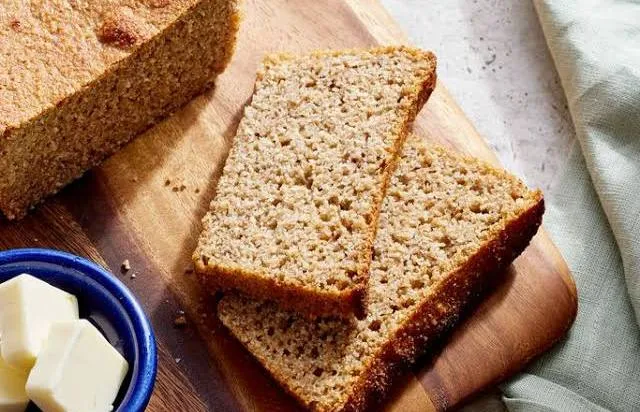

Home
Ezekiel Bread

Ezekial bread is one of the oldest form of baked goods expanding back
intot he Roman Empire. It is also highly sought out due to its ingredients
not including excessive additives. Its simply sprouted grain and varying
mixes of milled beans.
Ingredients
- 2 ½ cups hard red wheat berries
- 1 ½ cups spelt berries
- ½ cup hulled barley
- ¼ cup millet
- ¼ cup dry green lentils
- 2 tbsp dry great Northern beans
- 2 tbsp dry red kidney beans
- 2 tbsp dry pinto beans
Other Ingredients (wet)
- 2 (0.25 ounce) packages active dry yeast (about 2 tablespoons)
- 2 tsp salt
- ½ cup olive oil (or grapeseed oil)
- 1 cup honey (or maple syrup for a vegan option)
- 4 cups lukewarm water
Steps
-
Activate the Yeast: In a large bowl or the bowl of a stand mixer,
combine the warm water, honey, olive oil, and yeast. Let this mixture
sit for about 5-10 minutes, until it becomes foamy.
-
Prepare Dry Ingredients: While the yeast is activating, combine all the
dry whole grains and beans in a separate bowl. Grind the mixture into a
fine powder using a flour mill or a high-powered blender.
-
Combine Mixtures: Add the freshly ground flour mixture and salt to the
yeast mixture. Stir and/or knead with a dough hook for about 10 minutes
until well combined. The dough will be very sticky and wet, more like a
thick batter, which is normal for this recipe.
-
First Rise: Pour the dough into two greased 9x5-inch loaf pans, filling
them about halfway. Cover the pans with a towel and let the dough rise
in a warm place for about 45-60 minutes, or until it has risen to the
top of the pan.
-
Bake: Preheat your oven to 350°F (175°C). Bake for 45 to 50 minutes, or
until the loaves are golden brown and sound hollow when tapped.
-
Cool Completely: Immediately remove the loaves from the pans and place
them on a wire cooling rack. Allow the bread to cool completely before
slicing to prevent a gummy texture.